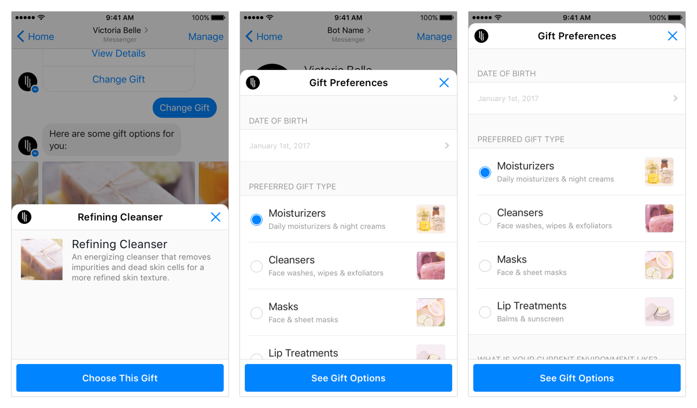

3 Things You Are Not Doing to Sell Messenger Bots
What are the most convincing arguments
1. Do as much research as you can on your potential client.
It’s no good waltzing in and doing your well rehearsed sales pitch if you don’t even have a basic understanding of their business sector; or worse, an understanding of their business in their business sector.
It’s not one size fits all.
[...]

2. Talk less and listen more, much more.
Messengers bots are no doubt the next big thing when it comes to marketing, but having a one way conversation about how great they are, what they can do and you will quickly get a glazed look from your potential client.
Your clients don’t care about the statistics, they couldn’t be more un-interested in it being the next big thing; all they want to know is what it can do for them. How can this messenger bot thing help their business and services? What’s the benefit to them? How will it make their lives easier, better and most important of all, bring in more money?
[...]